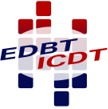
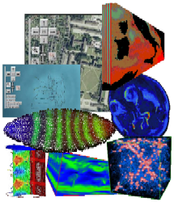

|  |
EDBT/ICDT 2011
|
March 25, 2011 --- Uppsala, SwedenThe workshop proceedings are available! |
|
Workshop Theme
|  |
From the fundamental collection paradigms known in conceptual modeling - sets, bags, lists, and arrays - it is the array concept which has long been neglected by the database community. However, as sensors are becoming ubiquitous and inexpensive, and as further simulations become large, multi-dimensional arrays are attributed a large share of today's archive spaces. Geoscientific examples include 1-D sensor time series, 2-D satellite imagery, 3-D x/y/t image time series and x/y/z geology data, and 4-D x/y/z/t climate and ocean simulation data. A similar wealth of array data can be found in space, life, and other sciences. Sparse arrays appear in OLAP. In summary, arrays (by practitioners often referred to as raster data) comprise the natural representation of n-dimensional sensor, image, and statistics data. Typically these data come in massive volumes, with Petabyte - in future Exabyte - sizes for single arrays.
Unleashing this huge data reservoir for online analytics by scientists, industry, government, and citizens represents a major information services challenge. As traditional databases do not support large arays, in today's practice ad-hoc implementations prevail, often done by service providers themselves and centered around some particular data formats. Databases are hardly involved for array management. Many researchers believe, however, that database technology can offer its traditional benefits, such as information integration, flexibility of query language, scalability, and dynamic optimization, on arrays as well.
Currently no forum is existing which expressly concentrates on array databases. Filling this gap, this workshop will gather experts interested in theory, architecture, applications, standardization, and any other relevant aspect of array services. In the closing panel, foundation will be laid towards a research agenda for this emerging field.
Topics of Interest
Submissions of original research contributions and software demonstrations are invited for all array relevant topics, including - but not limited to - the ones below:
- array theory: algebras and calculi
- query languages for massive array data analytics
- logical and physical optimization
- storage methods
- storage hierarchies
- compression
- array database architectures, including both servers and clients
- distribution and virtualization
- data quality
- uncertainty
- sensor data
- MOLAP
- applications and standardization, such as in Earth, Space, and Life Sciences
- beyond arrays: meshes and other space-time varying data
- system demonstrations
This one-day workshop on March 25, 2011 will be co-located with EDBT/ICDT 2011 at Uppsala, Sweden. Workshop participants will have to register for EDBT/ICDT; attendance to all workshops will be included in the overall registration fee.
Workshop Program
| Welcome | |
| SciQL, A Query Language for Science Applications (M. Kersten) [ slides ] | |
| Array Requirements for Scientific Applications and an Implementation for Microsoft SQL Server (L. Dobos et al.) [ slides ] | |
| coffee break | |
| Hybrid Merge/Overlap Execution Technique for Parallel Array Processing (E. Souroush, M. Balazinska) [ slides ] | |
| Accelerating Computationally Intensive Queries on Massive Earth Science Data (P. Baumann) [ slides ] | |
| lunch | |
| An Overview of the HDF5 Technology Suite and its Applications (G. Heber) [ slides, HD5 use ] | |
| discussion: Towards a Research Agenda for Array Databases | |
| End of workshop |
Important dates
| submission deadline: | January 17, 2010 |
| notification to authors: | February 01, 2011 |
| camera ready paper due: | February 22, 2011 |
| workshop: | March 25, 2011 |
Submission guidelines
Research and demo papers should all be formatted using the ACM double-column format (templates available at: http://www.acm.org/sigs/publications/proceedings-templates). The maximal length is:
- 12 pages for research papers
- 5 pages for demo papers
All papers must be submitted in PDF format to one of the workshop chairs; use and .
Workshop chairs
- Peter Baumann, Jacobs University Bremen, Germany
- Bill Howe, University of Washington, USA
Workshop program committee (to be completed):
- Peter Baumann
- Bill Howe
- Martin Kersten
- Malcolm Atkinson
- Yannis Ioannidis
- Stefano Nativi
- Alfredo Cuzzocrea
- Julio Lopez
- Chris Jermaine
Publication and IP issues
Papers will be made available in online conference proceedings, possibly hosted within the ACM Digital Library (subject to approval).
*** To enable conference attendees and the general community to
*** glimpse at the content a bit ahead of the conference, we plan
*** to make the papers electronically available before the
*** conference, on March 10, 2011.
*** Authors are thus encouraged to make sure the necessary
*** patent issues are solved and enable publication by this date.
This page is hosted by rasdaman GmbH and the open-source rasdaman project bringing you a fully-fledged high-performance array database system.